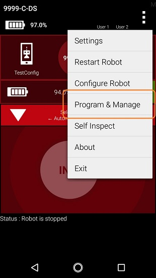
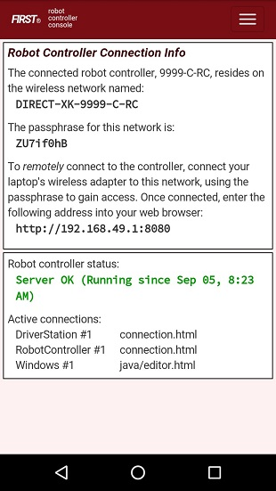
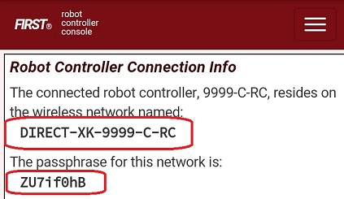
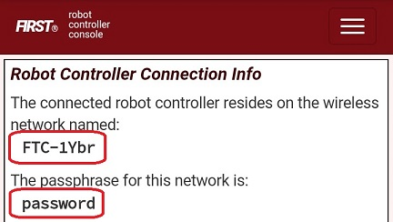
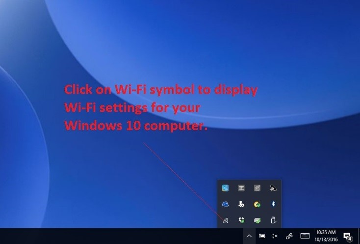
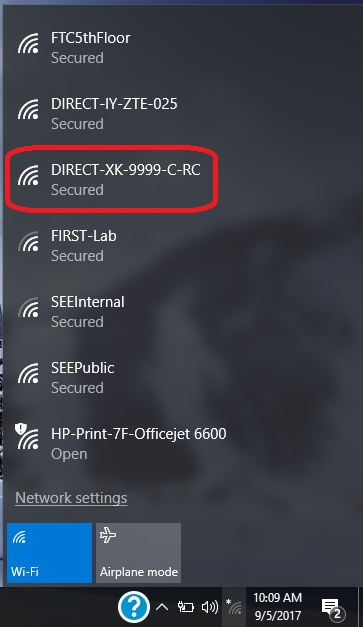
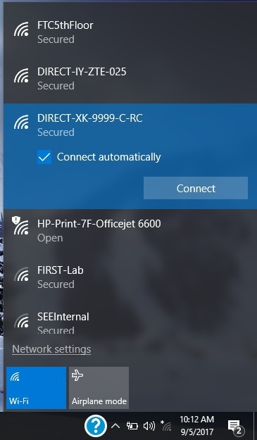
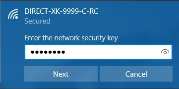
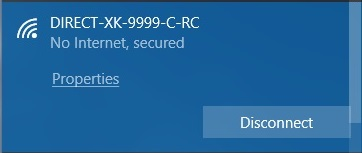

Connecting a Laptop to the Program & Manage Network
Connecting Your Laptop to the Program & Manage Network
In order to write an Op Mode, you will need to connect your programming laptop to the Program & Manage Wi-Fi network. The Program & Manage Wi-Fi network is a wireless network created by your Robot Controller. Before you begin this exercise, please make sure that your Windows laptop has the most current service pack and system update from Microsoft installed.
Note that this example assumes the user has a Windows 10 laptop. If you are not using a Windows 10 laptop, the procedure to connect to the Programming & Manage Wi-Fi network will differ. Refer to your device’s documentation for details on how to connect to a Wi-Fi network.
Connecting Your Laptop to the Program & Manage Network Instructions
1. On the DRIVER STATION, touch the three dots in the upper right hand corner of the screen to launch the pop-up menu. Select Program & Manage from the pop-up menu to display the Program & Manage access information.
2. The Program & Manage screen displays important information that you can use to connect your laptop to the Blocks or OnBot Java Programming Mode server.
3. Verify the network name and passphrase for the Program & Manage wireless network. Towards the top of the screen, the name of the Program & Manage wireless network is displayed. If you are using an Android smartphone as your Robot Controller, then the wireless network name will begin with the phrase “DIRECT-“.
In this example, the name of the Wi-Fi network is “DIRECT-XK-9999-C-RC” and the secure passphrase is “ZU7if0hB”
If you are using a Control Hub, then the wireless network name will be whatever you specified when you configured your Control Hub. If you haven’t changed the Control Hub’s name yet, then by default the wireless network’s name will begin with “FTC-”. If you haven’t changed its password yet, then by default the wireless network’s passphrase will be “password”.
In the screenshot below, the Control Hub’s wireless network name is “FTC-1Ybr” and the secure passphrase is “password”.
4. On your Windows 10 computer, look in the lower right hand corner of your desktop for a Wi-Fi symbol. Click on the Wi-Fi symbol to display a list of available Wi-Fi Networks in your vicinity.
5. Look for the wireless network that matches the name displayed on the Program & Manage screen.
In this example, the name of the wireless network for the Android Robot Controller is “DIRECT-XK-9999-C-RC” and the network is visible in the list displayed on the Windows 10 computer.
6. Once you have found the target network in the list, click on it to select it.
Press the Connect button to connect to the network.
7. When prompted, provide the network passphrase (in this example “ZU7if0hB”) and press “Next” to continue.
Note that the passphrase is case sensitive. Make sure that your spelling and capitalization matches the original spelling and capitalization shown on the Program & Manage screen.
8. Once you have successfully established a wireless connection between your Windows 10 laptop and your Robot Controller Android device, the status should be displayed in the wireless settings for your laptop.
If the display is not updated as shown after a few seconds, try clicking on Network Connections at the bottom of the blue box showing the Wi-Fi connections. This will bring up a Setting dialog box that includes a link to “Show available networks”, which can be used to force the list of Wi-Fi connections to be updated.
Attention
Note that when you are connected to the blocks programming mode server on your Robot Controller, your laptop will not have access to the Internet. It only has direct access to the Robot Controller.
Troubleshooting Your Wireless Connection
If you cannot see your Programming Mode wireless network in the list of available networks, or, if you are having problems connecting your laptop to the Program & Manage wireless network, make sure you answer the following questions:
Is the Robot Controller running and connected to the DRIVER STATION?
Is your Windows laptop updated with the most current system updates and service packs? Older versions of Windows 8 and 10, for example, had issues that could prevent the laptop from displaying the Program & Manage wireless network in the list of available networks.